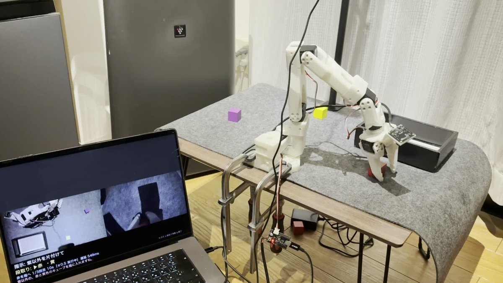
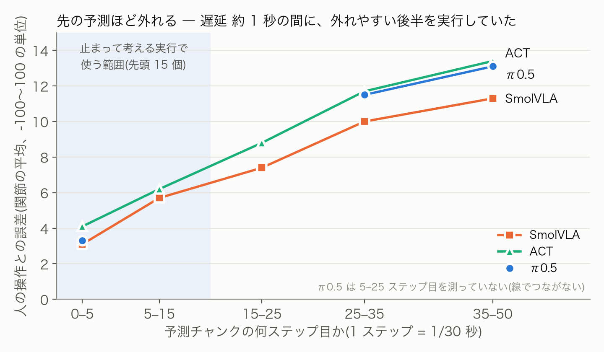
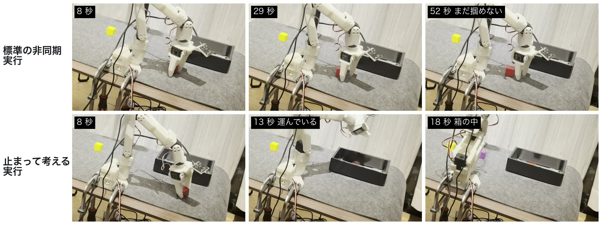
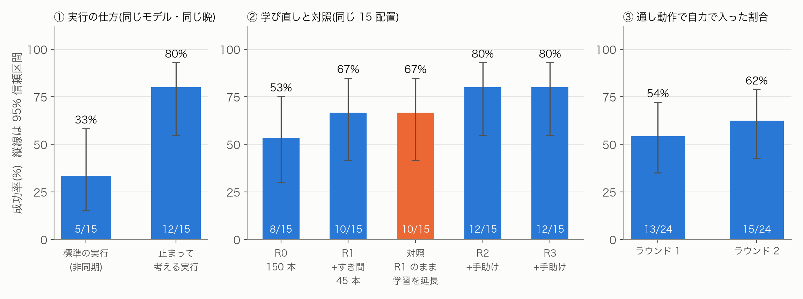

自分で録画した手本で π0.5 をファインチューンし、机の上の 3 色のキューブを箱へ片付けさせた。学習は順調に見えたのに、実機ではキューブのすぐ上まで行って掴めない。この「なぜ」を、記録したデータと対照実験で一つずつ切り分けた。
分かったことは 3 つ。① 推論の遅延の間に、外れやすい予測の後半を実行していた(最有力の原因)、② 学習データに無い状況(箱にキューブが入った状態)では動かない、③ 人が手伝った操作を学習に戻すと 67% → 80%。学習を同じだけ延ばしただけの対照は 67% のままだった(ただし差は 15 試行中 2 回で、言い切れない)。最後に、言葉の指示(Claude)、成否の判定、やり直し、失敗の説明、人への引き継ぎをつないで、「片付けて」と頼めるロボットにした。
机の上の赤・黄・紫のキューブを、言葉の指示で箱へ片付ける実機ロボット。System 2 / System 1 の 2 段構えにした。
| 講座のサンプル | この作品で加えたこと |
|---|---|
| SO-101 入門(テレオペ・録画・学習) | 3 照明 × 3 色の録画手順、1 本ずつの監査ツール、置き場所の偏りの分析、π0.5 のファインチューン(H200)、置き場所を画面に示して毎回同じ配置で比べる評価ツール |
| 自然言語でロボット操作 | 言葉 → 色の列(構造化出力で検証)→ 学習済みの指示文、の 2 段構え。画像で卓上の状態を確かめ、無い色や箱の中の色は除く |
| VLM でロボットを動かす | 成否の判定(キューブは色検出、それ以外は Claude)、失敗の説明、やり直しと人への引き継ぎ |
| (サンプルに無い) | 遅延の原因を「予測と人の操作の比較」で突き止め、止まって考える実行で解決。データの穴を突き止め、人の手助けを学習に戻す効果を対照実験で確かめた |

最初のモデルは 15 試行で 6 回(40%)しか成功しなかった。失敗はほとんどが「キューブのすぐ上まで来て、少しずれた所で掴もうとし続ける」型だった。手でキューブを顎の間に置いてやれば掴める。
学習に使っていない 4 本の手本で、モデルの予測と人の実際の操作を比べた。行動のまとまり(50 ステップ = 1.7 秒分)の先頭 0〜5 ステップ目の誤差は 3.3 だが、35〜50 ステップ目は 13.1。学習データ上ではどこも 1.5〜2.4 で平らなので、未知の場面では「先の予測ほど当てにならない」。SmolVLA・ACT でも同じ傾向だった。

観測から行動が届くまでに約 1 秒(30 ステップ分)かかる。標準の非同期実行は、届いた時点で過ぎてしまった前半を飛ばし、外れやすい後半を実行していた。さらに古いまとまりと新しいまとまりを混ぜていた。土台を大きく回す横の位置ほど、この 1 秒のずれが効く。
まとまりの先頭 15 ステップ(0.5 秒、実行ホライズン K = 15 の同期実行)だけを実行して止まり、止まった後の画像で次のまとまりを予測させる。止まった時刻より前の観測にもとづくまとまりは捨てる。動きは途切れるが、常に予測のいちばん正確な部分だけを使う。LeRobot の非同期推論のクライアントを継承して実装した(scripts/remote/fast_client.py)。
| 同じモデル(5 章の対照モデル)・同じ 15 配置 | 成功 | メモ |
|---|---|---|
| 標準の非同期実行 | 5/15 = 33% [15–58%] | 10/31 夜 |
| 止まって考える実行(先頭 15 ステップ) | 12/15 = 80% [55–93%] | 10/31 夜(非同期と同じ晩)。配置ごとに比べると、止まって考えるだけ成功 9、非同期だけ成功 2(正確な McNemar 検定 p = 0.065) |

切り分けきれていないこと: 止まって考える実行は、前半を捨てること以外にも、新旧のまとまりを混ぜない、止まってから画像を撮る(動きのぶれが無い)という点で非同期と違う。どれが効いたかまでは分けていない。K = 15 以外の値や、非同期側の設定(切り替えのしきい値、混ぜ方)も 1 通りしか試していない。
「片付けて」で通して動かすと、1 個目が箱に入った後、2 個目に取りかからずその場で止まった。学習データ 144 本を調べると、箱にキューブが入った状態から始まる手本は 0 本だった。実際に止まった場面の観測(画像と関節角)を記録から取り出し、モデルに見せて「どれだけ動こうとするか」を測った(scripts/remote/replay_probe.py)。
| 記録した場面 | 最初のモデル | 「箱に入った状態から」の手本 45 本を足したモデル |
|---|---|---|
| 赤が箱の中、黄を指示(実機で止まった場面) | 1.6(動かない) | 120.8 |
| 同上、別の場面 | 1.5(動かない) | 106.4 |
| 箱が空、赤を指示(実機で動いた場面) | 106.1 | 110.9 |
値は、予測した 50 ステップの中で、今の姿勢から最も離れる関節の離れ幅(グリッパを除く 5 関節。関節は -100〜100 に正規化した単位なので、差は最大 200。3 回の平均)。足りない状況の手本を足すと、その状況で動くようになることが、実機を動かさずに確かめられた。
データを足して学び直すたびに、同じ 15 配置での成功率は 53% → 67% → 80% と上がった。人が通し動作で手伝った区間(リーダーアームで引き取った動き)を学習に戻したのがラウンド 2 と 3。これが手助けのおかげなのか、単に学習を延ばしたからなのかを分けるため、ラウンド 1 のデータのまま学習を同じだけ(4,000 step)延ばした対照モデルを作った。対照は 10/15 = 67% で、ラウンド 1 から伸びなかった。
訂正: 対照の評価(10/28)は当初 14/15 と記録したが、失敗しかけた 4 回で作者が指でキューブを掴みやすくしていたため、成功に数えない。正しくは 10/15。ほかの評価では手を出していない。

| モデル | 学習データ | 追加の学習 | 成功 |
|---|---|---|---|
| ラウンド 0 | 手本 144 本 | 20,000 step | 8/15 = 53% |
| ラウンド 1 | + すき間・箱に入った状態から 45 本 | +6,000 | 10/15 = 67% |
| ラウンド 2 | + 人の手助け 11 区間 ×3 | +4,000 | 12/15 = 80% |
| ラウンド 3 | + 人の手助け 8 区間 ×3 | +4,000 | 12/15 = 80% |
| 対照 | ラウンド 1 と同じ(手助けなし) | +4,000 | 10/15 = 67% |
Claude に俯瞰画像と指示を渡し、構造化出力で色の列を返させる。π0.5 には学習時とまったく同じ英語の指示文だけを渡す。Claude が使えないときはキーワードのルールに切り替える。
| 指示 | 段取り | ロボットの返事 |
|---|---|---|
| 片付けて | 赤 → 紫 → 黄 | 箱に近い順に片付けます |
| 紫以外を片付けて | 赤 → 黄 | 赤と黄色を箱に入れますね |
| 信号の色のものだけ箱に入れて | 赤 → 黄 | 信号の色の赤と黄色を箱に入れますね |
| 緑のを入れて | (なし) | 緑のキューブは見当たらないので入れられません |
「片付けて」を 8 回ずつ(24 色)通した。最終的に箱へ入ったのはどちらも 24/24。人の手を借りずに入ったのは、ラウンド 1 が 13/24 = 54%、ラウンド 2 が 15/24 = 62%。人の手助けが要ったのは主に、2 色目の黄(箱に赤が入った状態から)と、手前・右の端だった。動画の撮影(10/31〜11/1)では撮り直しのために途中で止めた回が多いので、成功率には数えていない。動画に使った回は、「紫以外を片付けて」が 2 色とも自力、「片付けて」が 3 色とも自力、苦手な真ん中に置いた「赤だけ入れて」は 3 回失敗して説明 → 人を呼んで引き取り。同じ置き場所で実行の仕方だけを変えて続けて動かすと、非同期は 60 秒たっても掴めず、止まって考える実行は 16 秒で箱へ入った(動画 0:03〜)。
| 問題 | 突き止め方 | 対策 |
|---|---|---|
| 近くまで行くが掴めない | 予測と人の操作の比較。先の予測ほど外れ、遅延の間に後半を実行していた | 止まって考える実行 |
| 制御ループが 1 周 3.5〜4.3 秒 | 区間ごとの計測。生画像 1.38MB を同期で送っていた | 送信を裏スレッドへ、JPEG で送る(1 周 2〜4ms) |
| 推論が倍に遅い | GPU の使用状況。別のシミュレータ 2 つが計算を占有していた | 止めて 520 → 255ms |
| 箱が数 cm ずれていた | 学習時の画像と重ねて比較(箱だけ約 53px ずれ) | 重ね合わせツールで毎回確認 |
| 夜に箱を誤検出 | 学習 150 本で検出を確かめ直し、夜の 50 本すべてで誤っていた | 彩度と形で床を除く |
| 1 個入ると次が動かない | 学習データの開始時の状態を調べたら 0 本。記録した場面の再生で確認 | 「箱に入った状態から」の手本 |
| 失敗が置き場所に偏る | 評価の初期位置を学習データの置き場所に重ねた(3 つのかたまりに偏り) | すき間を狙った追加録画 |
| モデルの差と置き場所の差が混ざる | 同じ晩に前のモデルも成績が落ちていた | 置き場所を映像に丸で示す評価ツール |
| 伸びたのは手助けのおかげか、学習を延ばしたからか | 手助けを抜いて同じだけ学習した対照モデル | 対照は伸びず、手助けの効果を示唆(5 章) |
| 手助けの判定が「入っていない」 | 録画を確認。手伝いの途中で俯瞰カメラにぶつかり画像が約 90px ずれていた | その区間を学習から除外 |
| データの結合後に読み込めない | LeRobot の結合ツールが、元データのファイル番号を目次にそのまま写していた | 目次を直して結合(不具合として報告予定) |
セットアップ、録画、学習、評価、通し動作のコマンドはリポジトリの README にまとめた。評価の結果は outputs/eval/results.csv(試行ごと)と docs/evaluation.md(経緯)に残している。開発では Claude(Claude Code)をコードの作成、録画の分析、文書の下書きに使い、すべての判断と実機の作業は作者が行った。ロボットの段取り・判定・失敗の説明には Claude API を使う。コードは MIT ライセンス。π0.5 の重みは openpi / LeRobot の条件に従い、公開しない。